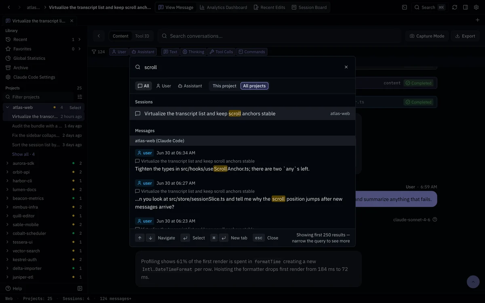
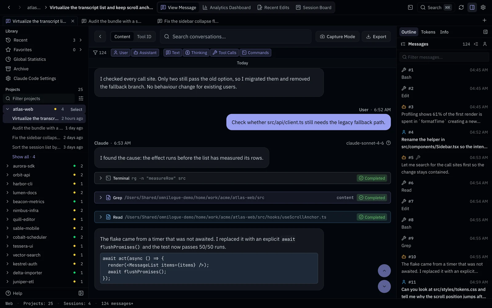
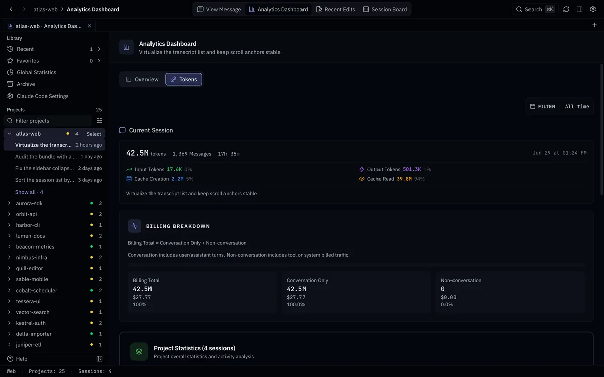

02 / 03
Find the thread again
Search across projects and assistants. Jump to matching messages, follow a conversation branch, or find a step in a long run.


Open source · Local-first
Find the prompt, decision, or tool call you need. Omnilogue brings the sessions already on your machine into one searchable library.

The workspace
Revisit a single conversation or see how you work across projects and assistants.
02 / 03
Search across projects and assistants. Jump to matching messages, follow a conversation branch, or find a step in a long run.

03 / 03
Review tokens and estimated API costs where logs provide enough data. See which activity came from subagents.

Desktop release
The desktop app reads local history without an Omnilogue account or a cloud upload.
Universal · Apple silicon and Intel
macOS on GitHubx64 · NSIS installer
Windows on GitHubx86-64 · AppImage and Flatpak
Already installed? Update in place to keep your favorites and settings.